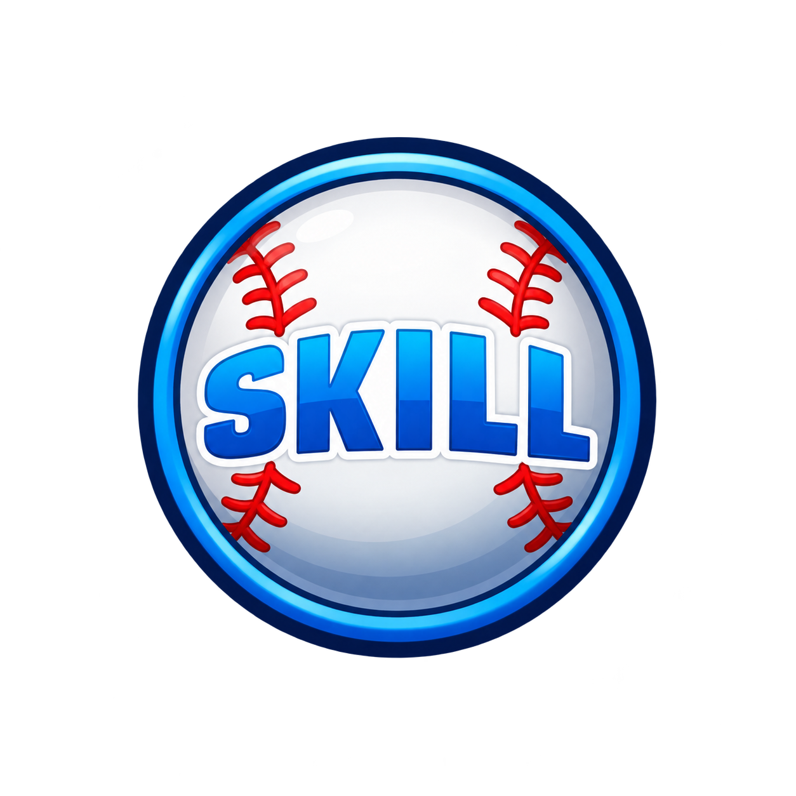

BASEBALL HEROES · 1.0.26 · 22 OCT 2026LEVEL UP con la estrella y el relieve del original
Publicada y comprobada por HTTPS. El partido completo y la subida de nivel también pasaron en la web pública. La cuenta QA se retiró y las cuentas anteriores se conservaron.
Cabecera ilustrada azul y dorada, número de nivel dinámico, insignia SKILL y premios más claros. Una aparición breve de 340 ms sustituye la entrada estática. Se conservan las recompensas y los desbloqueos que ya calcula el juego.
Abrir el juego · Notas y pruebas · Prompt de la cabecera · Prompt de SKILL
Antes y después sobre el mismo resumen de prueba
Ambas capturas usan la misma ventana diagnóstica: nivel 12, ocho desbloqueos, Panda/Pink Love/Camo y dos premios. Esta configuración solo se usa en QA; no concede artículos ni sube de nivel a jugadores reales.
 Antes · 1.0.25 · resumen QA
Antes · 1.0.25 · resumen QA Después · 1.0.26 · mismo resumen QA
Después · 1.0.26 · mismo resumen QALa referencia y su reconstrucción
 Original · gameplay de Facebook · 00:00Remake · cabecera y SKILL reconstruidos
Original · gameplay de Facebook · 00:00Remake · cabecera y SKILL reconstruidosLa otra referencia es el nivel 2 del video inicial, 05:52. Las imágenes nuevas se generaron con image_gen integrado. Son reconstrucciones, no sprites originales recuperados. El número se dibuja desde el resumen del juego. Las monedas y la energía reutilizan recortes existentes. CONTINUE conserva su función; no se simula una publicación en Facebook.
Comprobado en un partido completo del juego normal
Se registró una carrera de nivel 1/Rookie, 6,000 Coins y sin lentes. Solo esa carrera QA se colocó a un XP del siguiente nivel. El ejecutable normal jugó el partido, calculó sus premios y mostró la ventana. CONTINUE la cerró físicamente; HOME y recargar conservaron Coins, XP y el punto de habilidad.
 WebMain real · nivel 2 después del partido
WebMain real · nivel 2 después del partido CONTINUE cierra la ventana y permite continuar
CONTINUE cierra la ventana y permite continuarEl partido ocupa 590 px sobre la franja social. La prueba utiliza esa escala al pulsar los controles y comprueba que el rótulo realmente desaparece. Si el resumen no anuncia artículos, la ventana muestra CAREER PROGRESS; esta entrega conserva el catálogo actual.
Textos, premios y cierres
 Nombres largos y niveles de tres cifras · fixture QA
Nombres largos y niveles de tres cifras · fixture QA Un artículo y un premio centrados · fixture QA
Un artículo y un premio centrados · fixture QATambién se verificaron dos y tres premios, un resumen vacío, tres previsualizaciones, cierre durante la aparición y ocho ciclos de abrir/cerrar. La animación retira su listener a los 340 ms. Las cifras se presentan desde el resumen guardado y no se acreditan de nuevo al cerrar.
Escenarios locales de la ventana · Partido completo local · Conservación y paquete
Partido completo por HTTPS · 143 archivos publicados verificados · Retirada de la cuenta QA
Sprites integrados y procedencia
Cabecera · PNG copiado sin editar
SKILL · PNG copiado sin editar Cuatro fragmentos de textura compartidos, con unos 8,66 MiB de píxeles. La ventana usa un recuadro de píxeles medido para que el margen transparente de SKILL no reduzca su tamaño. El SWF aumenta unos 2 MB; no se afirma una mejora general de FPS.
Se conservan servidor, web, fórmulas, audio, cuentas, guardado v24 y cabeza de bateo 0.8.6. Sigue pendiente la prueba física de amigos en dos computadoras.